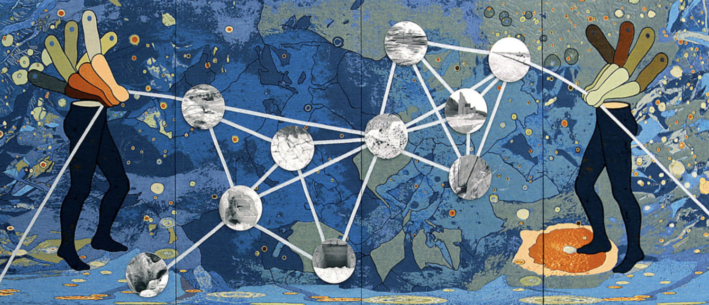
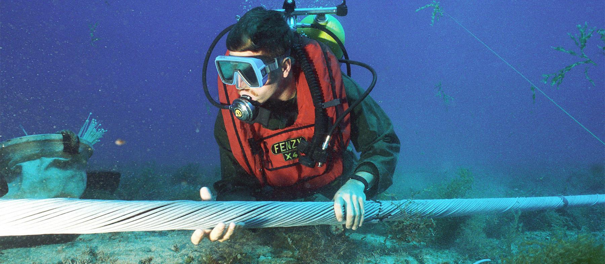

The digital is physical.
Any time you run a model or do anything online, there are entire material networks behind that action. It's just abstracted enough that it's hard to hold onto.
image credit: Otobong Nkanga - The Weight of Scars (2015)
image credit: US Naval Institute - underwater fiberoptic cables off the coast of Hawaii